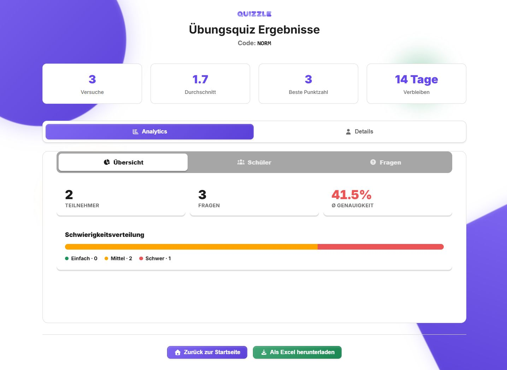
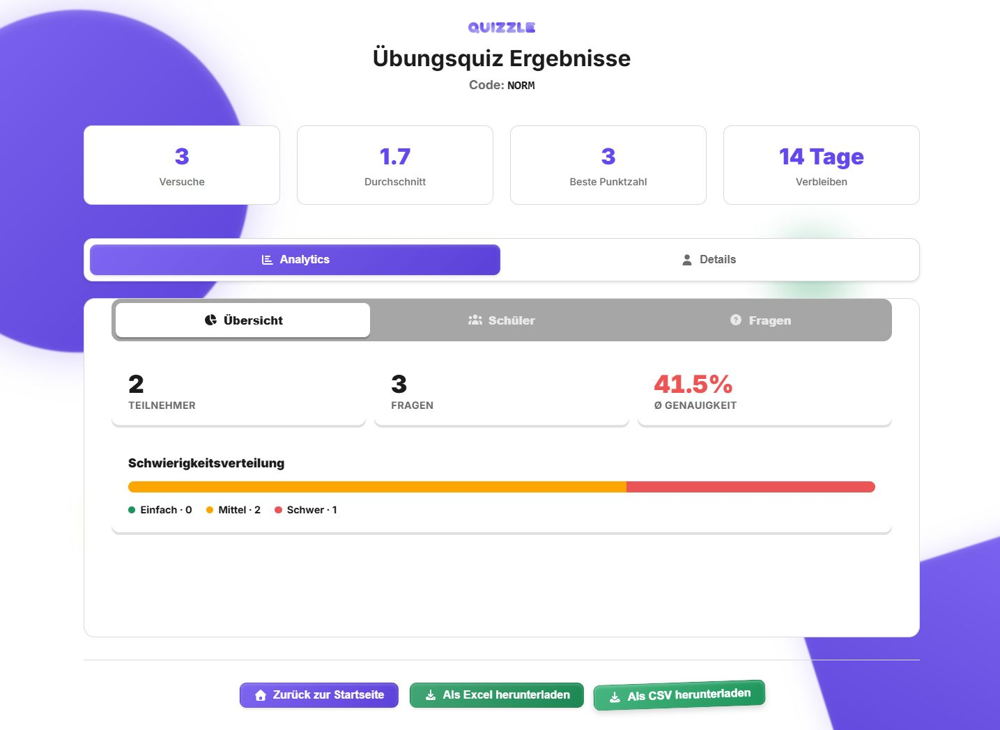

Quizzle: CSV-экспорт результатов
Выгрузка каждой попытки тренировочного теста для сводной отчетности по обучению.
Изменение интерфейса


План работ
| Этап | Результат | Оценка |
|---|---|---|
| T1 | Анализ проекта, исходный снимок | 0,75 ч |
| T2 | Issue и GitHub Projects | 0,5 ч |
| T3 | CSV и автоматические тесты | 1,25 ч |
| T4 | Кнопка скачивания | 0,75 ч |
| T5 | Выгрузки, сборка, снимки | 1,25 ч |
| T6 | Коммиты, PR, проверка изменения | 0,5 ч |
| T7 | Отчет и материалы защиты | 1 ч |
Публичный GitHub ProjectsЗапрос на функцию и критерии готовности
Два объекта работы
Quizzle — открытый веб-сервис учебных тестов. Рассматривается применение после корпоративного учебного модуля, без заявления о внедрении в компании.
GitHub Issues и Projects — система управления этой доработкой: запрос, семь этапов, оценки и статусы. Репозиторий и PR сохраняют связь плана с кодом.
GitHub Flow
main → feature/practice-results-csv → pull request #9 → main
Issue и первоначальный план созданы до реализации. Работа выполнена в личном форке: исходный репозиторий автора не изменен.
PR #9 слит в main 05.10.2026, issue #1 закрыта. Первоначальные оценки этапов сохранены в Projects.
Проверки и ограничения
Подтверждено
- Обычная выборка: 3 попытки, включая повторную.
- Пустая выборка: только заголовок CSV.
- Специальные имена: кириллица, запятые, кавычки, перенос строки.
- UTF-8 BOM, CRLF, дробные и нулевые баллы.
- Сборка, скачивание CSV и прежнего XLSX.
- Кнопки помещаются на экране 390 px.
Границы результата
- Использованы только синтетические данные.
- Формулоподобные имена получают апостроф.
- Полный линтер блокируется исходной конфигурацией ESLint 10; отдельная проверка измененных файлов прошла.
- Независимое ревью и публичное выступление не имитировались.
Разработка и подготовка материалов выполнены с помощью Codex. Локальные проверки не заменяют приемку в реальной образовательной организации.